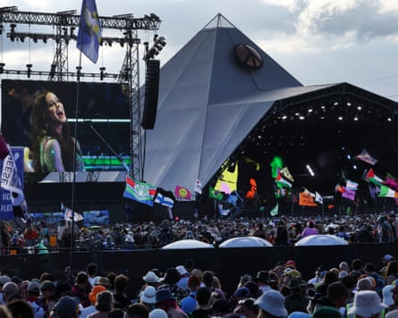
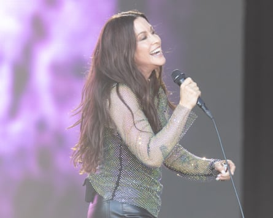

A lanis Morissette has landed the coveted pre-headliner “sundowner slot” on the Pyramid stage on Friday, and without any significant clashes, setting her up for a healthy crowd. Just in case you’re not familiar with who she is, her set opens with a helpful explanatory video emphasising her cultural impact with testimonials from Kelly Clarkson, Halsey and (actual Glastonbury headliner) Olivia Rodrigo, as well as clips from interviews giving a brief overview on her views (anti-war; “naturearchy” over patriarchy). This brazen American narration letting you know that you’re about to see a seven-time Grammy award-winner and a Very Influential Artist strikes a slightly odd note (or maybe just an un-English one). The spirit of Glastonbury, after all, is one where even the biggest star in the world must profess earnest and heartfelt gratitude for having been permitted to so much as cross the threshold of this holy ground; Morissette’s video intro, emphasising her importance – under-acknowledged as it may be – risks setting expectations unattainably high.
Morissette on the Pyramid stage.Photograph: Andy Rain/EPA
However, when Morissette takes the stage, she is very quick to show that she deserves them. After a little trill on her harmonica, she introduces One Hand in My Pocket, one of her best-known songs. It’s a smart move, not only inviting the audience to join in with its built-in choreography (one hand making a peace sign, one hand holding a cigarette – good luck hailing that taxi cab!) but also signalling that she’s setting out to play a crowd-pleasing set, and not planning to hold back on the hits. For anyone who has cared to see beyond her reputation as the Canadian singer of Ironic and/or an angry man-hating feminist – as she was persistently dismissed, even at her career peak – Morissette has always been defined by her voice. It’s both incredibly powerful, capable of the octave-jumping acrobatics that define pop’s most lauded singers, but also – more unusually – idiosyncratic: you don’t have to be very familiar with her back catalogue to be able to do a quickly guessable impression. Thirty years on from her album Jagged Little Pill, no one would fault Morissette if she wasn’t able to summon the raw power that made that album so enduring. It’s defined of course by You Oughta Know, a song that makes every other song subsequently described as having been “inspired by female rage” (and there have been many!) sound as if they were written by ChatGPT. But if there were any doubts about her voice among the crowd, Morissette dispels them instantly, really putting some welly into her trademark warble, even for One Hand in My Pocket – one of her lower-intensity hit songs. “Got some pipes on her, eh,” my sister messages me from elsewhere in the field and I can only agree. The focus of this set is on Morissette as a singer, as much as a songwriter, and it’s refreshing – after a decade now of whisperpop , and even the angriest young feminists in pop seemingly struggling to actually raise their voices – to hear what a well-trained diaphragm is capable of. Perhaps relatedly, Morissette keeps the chat between songs to a minimum, thanking the crowd with an ear-to-ear smile then launching into Right Through You. On the screen behind her, a series of stats scroll through highlighting the multi-faceted grim reality for women today, still – from higher rates of depression and anxiety than men, to a tiny share of the world’s total wealth, to dismal stats of partner violence. It makes explicit the sexism and disrespect that has dogged Morissette through her career and brings it into the anniversary set, concluding the song with the question: “Why are we afraid of the divine feminine?”
Letting the songs speak for themselves … Alanis Morissette.Photograph: Anna Barclay
Morissette lets the question hang, or lets her songs speak for her. She introduces her band one member at the time, saving the crowd from the typically long list of names, but otherwise keeps focused on the set. When she launches into Hands Clean, another belter, you may be starting to realise she’s got more great songs than you remember.
The sheer proliferation of hits, many from Jagged Little Pill alone, keeps the set pacy. Head Over Feet, featuring a harmonica solo, lifts the energy after the earlier sobering messaging. Her charm as a songwriter lies in this duality of perspective, with Morissette being equally capable of razor-sharp clarity and also the feminine right to set it every aside once in a while.
A rhythm emerges to the set where, along with the member-by-member introduction to her band, Morissette showcases her vocal skills before launching into the song itself. The life-affirming energy of You Learn is lost to Smiling, a dirge-y ballad most reminiscent of Evanescence, which only Morissette seems to enjoy, twirling around on the stage as though entirely alone.
But Ironic is triumphant, a big singalong that gets everyone up and on their feet, even at the very crest of the hill – and You Oughta Know is ironclad, as powerful and shockingly direct as on your-ever listen. When Morissette concludes her set with Thank You – after of course thanking us, the audience, for the “bucket list” show – she seems to mean it and the feeling is mutual.